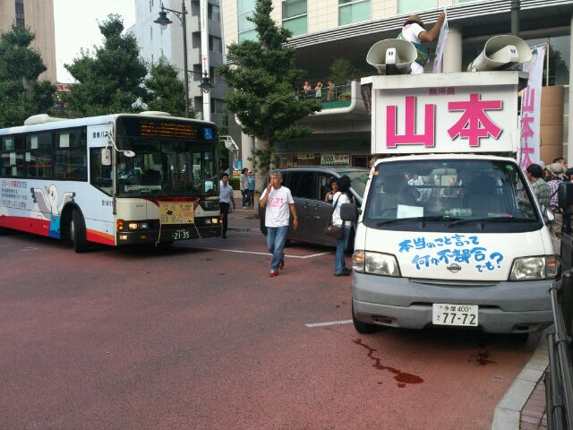

くじ引き民主主義のすすめ
公開日：

選挙運動は政治を託すにたる人物を選別するシステムなどではなく、選挙運動に特化した人材を選別するシステムなので、不要だ。個人的には“くじ引き”をお勧めする――というか、少し採り入れたほうがいいと思っている。
モンテスキューのくじ引き選挙論
くじ引き選挙はべつに僕の思いつきなどではなく、古来からある考え方だ（くじ - Wikipedia）。たとえば、モンテスキューはこう言っている（『法の精神』第二篇第二章）。
籤による投票は民主制の性質をもち、選択による投票は貴族制の性質をもつ。
くじ引きの利点として、彼は「抽籤はだれをも苦しめない選び方である。それは、各市民に、祖国に奉仕したいというもっともな希望を残す」とも語っている。くじ引きの利点は、それだけではない。
無作為抽出
くじ引きとは要するに“サンプリング”だ。つまり、統計学的にみて、くじ引きは“民意”をもっとも正しく反映する手段と言える。
独立性、予見の不可能性
くじ引きでは、抽出方法以外のなにものにも依存することなしに、結果が確定する。また、十分にランダムであるならば、結果を予見することもできない。
そのため、選挙人を説得したり誘惑する機会がないし、被選挙人を誹謗・中傷したり、危害を加えて排除することもできない。「抽籤はだれをも苦しめない選び方である」とモンテスキューが述べたのは、一つにこれが理由であろうと思う。
また、選択の際に周囲の動向を気にする必要もなく、また気にすることもできない。よって、結果を織り込んだ判断が意味を持たなくなる。美人投票的な“バブル”現象、つまりその場の勢いで、意図しない候補が選択されるのを防ぐことができる。
無差別
投票選挙では、市民のほとんどが政治と関わりなく一生を終える――投票という一本の蜘蛛の糸のような関係を除いて。そのような社会では、政治の専業化と、市民の消費者化が進む。
大阪であったトークイベントで、会場の若い人から「政治ってわかりにくい。ハードルが高い。だから参加しにくいんですよ」という発言が出た時にハッと気づいたんです。この若者に限らず、政治のことをわかりやすく説明するのは、「サービスを供給する立場にある政治家やメディアの側にある」と思い込んでいるのではないか。自分が政治課題を理解しようとする努力をせず、自分が政治に対してできることもあまり考えていないんじゃないか。それこそ、自分たちを消費者とみている証拠じゃないかと。
「有権者のみなさん、『消費者化』していませんか？」 映画監督・想田和弘さんに聞く日本の民主主義 【読解：参院選2013】 | ハフポスト
野菜ひとつとってもそうだが、今も、これからも、死ぬまでずっと食べるだけで作ることはないと思えば、自然と興味も値段と味、見た目だけになってしまうものだ。
しかし、くじ引き選挙では誰が選ばれるかわからないし、誰もが選ばれうる。モンテスキューが「各市民に、祖国に奉仕したいというもっともな希望を残す」と述べる由縁だ。
僕は「経験が共感を育む」と思う。より多様な立場を経験することで、より多様な立場への共感が生まれる。逆に、立場が固定されてしまえば、相手の立場への共感など生まれようはずがないと思う。
問題に対する共感が深まれば、よりよい解決策が生まれる。為政を専門家に委任するのではなく、みんなで分担することになれば政治への関心も高まるし、共感も深まるのではないだろうか。
――まぁ、これは半ば夢想だが。
個人的に裁判員制度へ期待するのは、実はこのようなことなのだけれど、日暮れて道遠し、だね。
くじ引き選挙の欠点
さて、これまではくじ引き選挙の利点ばかりを述べてきたが、この世に真円が存在しないように、完全な制度というものはない。
無作為抽出、無差別 → 選べない、アホも選ばれる
“哲人政治”を指向したプラトンに限らず、高い地位にはそれ相応の見識と能力を備えた人物を据えたいと思うのが人情だ。サイコロで選んだ政治家に自分の運命を任せるのはどうも不安だ、という人は多かろうと思う。
ただ、ひとつ言わせてもらうならば、「千里ノ馬ハ常ニ有レドモ伯楽ハ常ニハ有ラズ」――立場にふさわしい能力をもつ人物を見出す能力こそが世界でもっとも貴重。僕を含めて、凡人には無理な話なのさ。
とはいえ、マキャベリが言うように「民衆はバカだからなにがイイのかなんて分からない。でも、なにがダメなのかは分かる」。ダメなものをすばやく排除できる仕組みがあれば、“選べない”というくじびき選挙の欠点は緩和されるかもしれない。
独立性、予見の不可能性 → 非統一性、非連続性
朝令暮改、言ってることが二転三転する人と、長い付き合いをするのは難しいものだ。それはたぶん国と国との関係でも同じだと思う。もし意見を変えるとしても、相手の理解が得られるように努力したり、移行措置を設ける必要がある。
しかし、サイコロを転がして為政者を選んでいては、それが期待できない。
また、前項にも通じるが、個人の経験や人脈を生かした政治というのも期待できない。これは少しもったいない。
投票選挙とくじ引き選挙の組み合わせ
くじ引き選挙には多くの利点があるが、欠点もある。その欠点を緩和するために投票選挙を導入したほうがよい、というのがココでの結論になりそうだ。
まず、モンテスキューによる解決をみてみよう。
しかし、それは、それ自体として欠陥をもっているから、偉大な立法者たちは、それを規制し、矯正するために競いあった。
アテナイでは、ソロンが、全軍職は選択により任命され、元老院議員と裁判官は、籤で選ばれるよう定めた。
彼は、大きな出費を要する政務官職は選択により与えられ、他の職は籤で与えられることを望んだ。
しかし、抽籤を修正するために、彼は、立候補した者の中からしか選べないこと、選ばれた者は、裁判官により審査されること、だれもが、選ばれた者を不適格として弾劾しうることを規定した。それは、同時に、抽籤にも選択にも相通じていた。政務官職の終わりには、人は、自分の行動した仕方について、いま一度審査を受けなければならなかった。無能な人々は、抽籤に自分の名を出すのを、大いにきらったにちがいない。
モンテスキューは、端役をくじ引きで、重大な役職は選挙で選べばよいと言っている。しかもその選び方がちょっとユニークだ。選挙は立候補者の中から選ばれるが、任期の終わりに業績を審査するという。そうすれば、無能な人間は恥をかくのを恐れてそもそも立候補しないだろう、と。
しかし、これは鳩○や菅といった近年の首相を振り返るに*1、恥を知らない人間には通用しない制度ではないかと感じる。ここのところ、モンテスキューに“自然貴族的指向”というか性善説を感じる。
一方、ルソーの見解はこうだ。ルソーはモンテスキューの“自然貴族的指向”には触れず、システム論によってくじ引きと投票の使い分けを論じている。
「抽籤による選任が民主政の本質である」とモンテスキューは言っている。賛成である。しかし、どうしてそうなのか。モンテスキューは続けて言っている。「抽籤はだれも傷つけない選び方である。それは、各市民に祖国に奉仕できるという、もっともな期待をもたせるのである」しかし、理由はこの点にあるのではない。
政府の首長を選ぶことは政府の権能であって、主権の権能ではない点に注意すれば、なにゆえに抽籤による方法がより民主政の本性にかなっているかがわかるだろう。民主政においては、行政は、その行為が簡単ならば簡単なほど、よりよく行なわれるのである。
真の民主政においては、施政者の職は、いかなる場合でも、利益ある地位ではなく、わずらわしい負担であって、とくにある特定の個人を選んで、これを押しつけることは正当ではない。ただ法律のみが、籤に当たったものにこの負担を屈することができる。なぜならば、この場合には、条件は全員にとって平等であり、選択は人間の意志になんら依存せず、したがって、法律の普遍妥当性をそこなうような特定の適用は、まったく存在しないからである。
貴族政においては、執政体が執政体を選び、政府は自分の手で自分を維持する。そして、投票制が最も所を得ているのは、この政体においてである。
これは幼い頃の話だが、母親が町内会の会議に僕を連れて行ったことがある。議題は役員を決めることだったが、立候補者がいるわけもなく、話し合いでは決着がつかずに、最後はくじ引きが行われていた。引き当てたのはウチのおかんだった。
でも、それでいい。
役職に旨味がない場合――民主政治では理想的な状態だ！――、それは“わずらわしい負担であって、とくにある特定の個人を選んで、これを押しつけることは正当ではない”。つまり、投票選挙で行うことは望ましくない。とくに町内会の人事は、くじ引きできめることが望ましい。ルソー的に言えば、町内会は“貴族政治”の場ではなく、“民主政治”の場に近い。
民主政治が成熟し、今では名誉ある職であると思われている地位がただの“わずらわしい負担”とみなされるようになれば、くじ引きの出番が増えるのかも知れない。けれど、かりにそうだとしても、一国のトップの仕事がだれでも可能な“わずらわしい負担”になる日はかなり遠いように思う。
今回もカッチリした結論は出せなかったけれど、僕たちはくじ引き選挙の活用をもっと真剣に考えてよい。なにに向いていて、なにに向かないのかを慎重に検討して実際の選挙に活かせば、選挙カーでがなりたてるだけの選挙運動からはおさらばできるんじゃないか。“ネット選挙”も結構だけれど、あんまり本質的な議論だとは思えない。
*1:名字が一文字だと伏字にできないから困る。自分も一文字なので気をつけよう